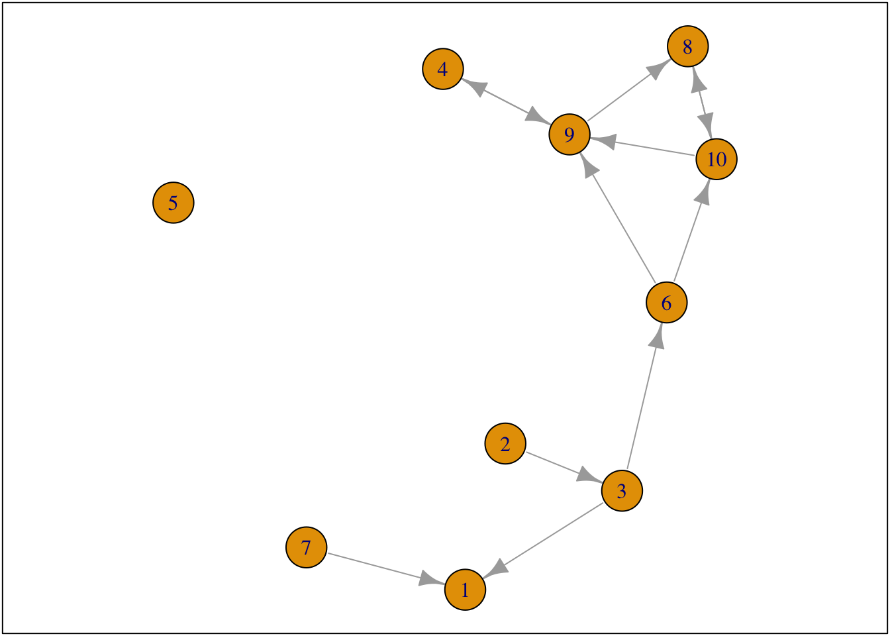
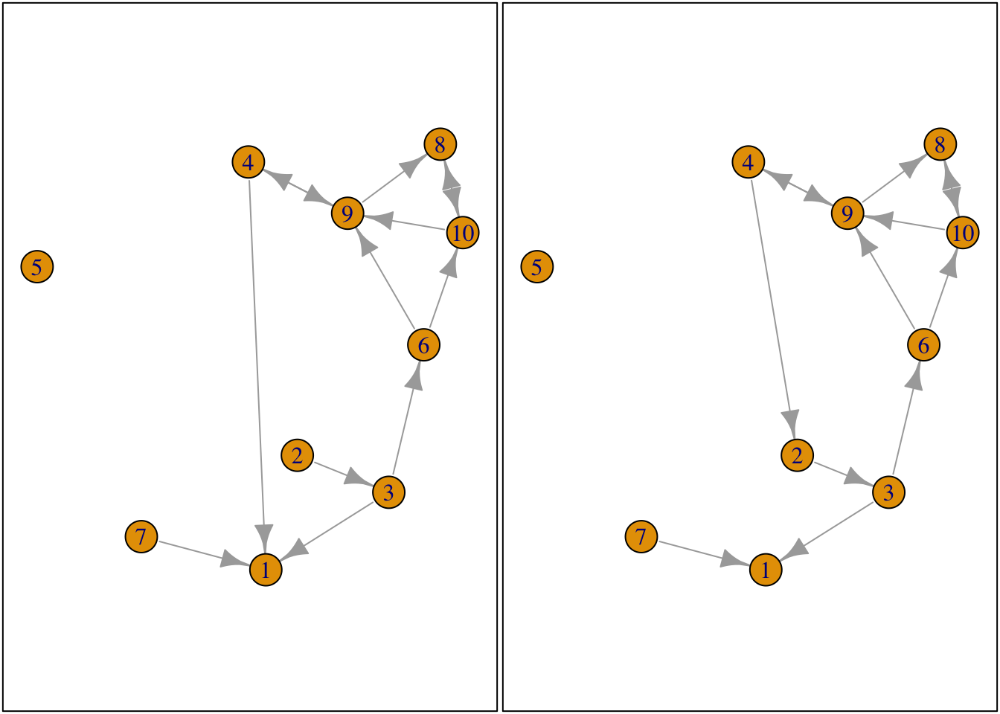
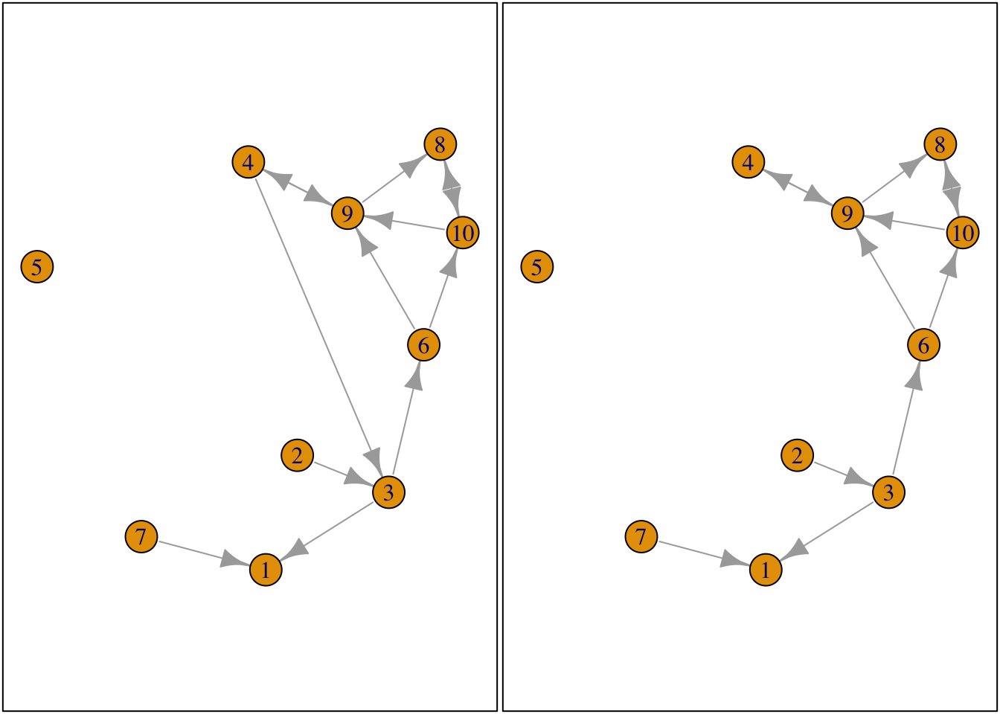
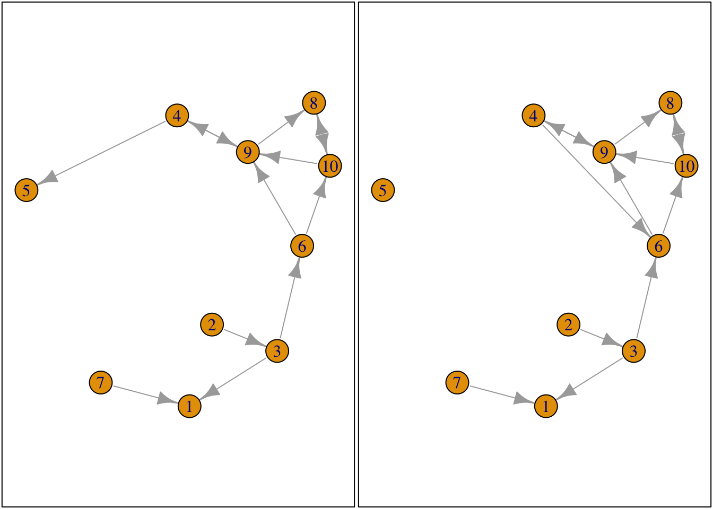
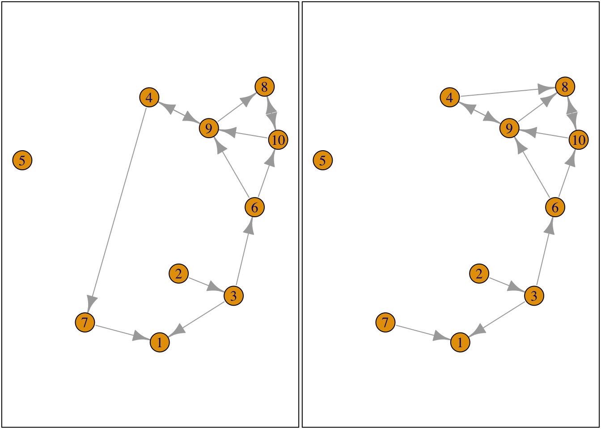
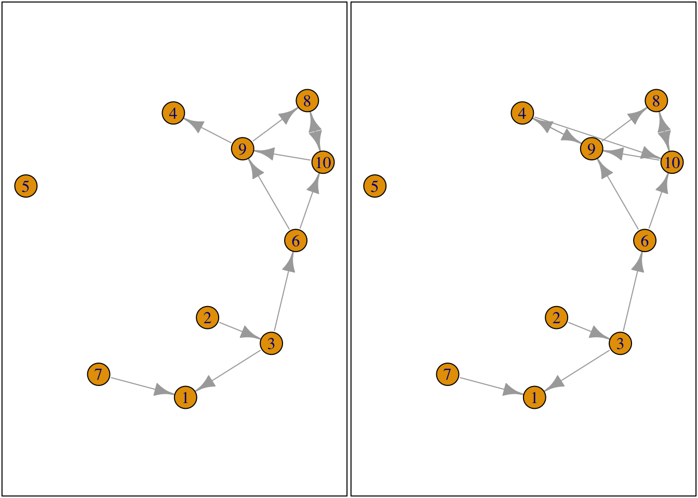
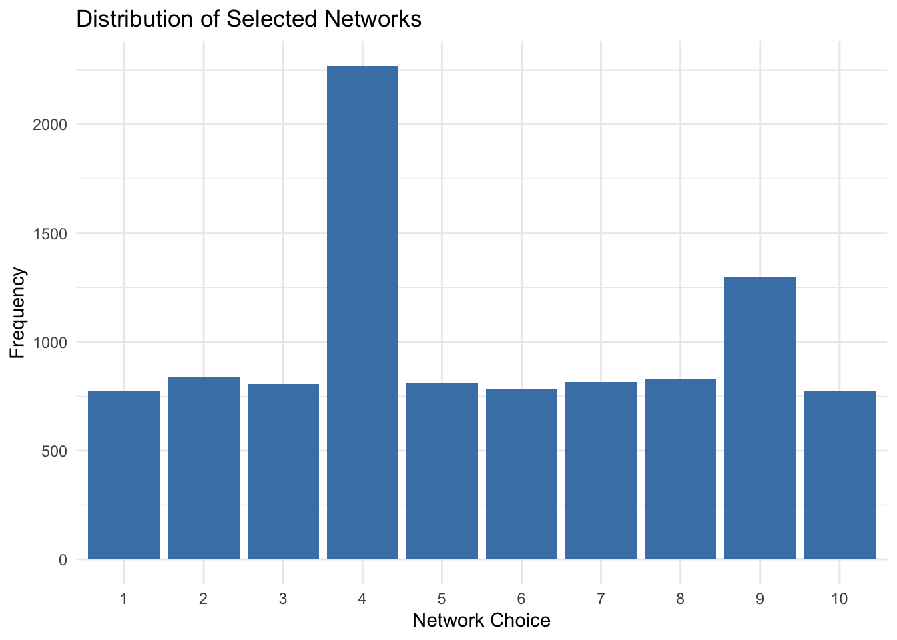
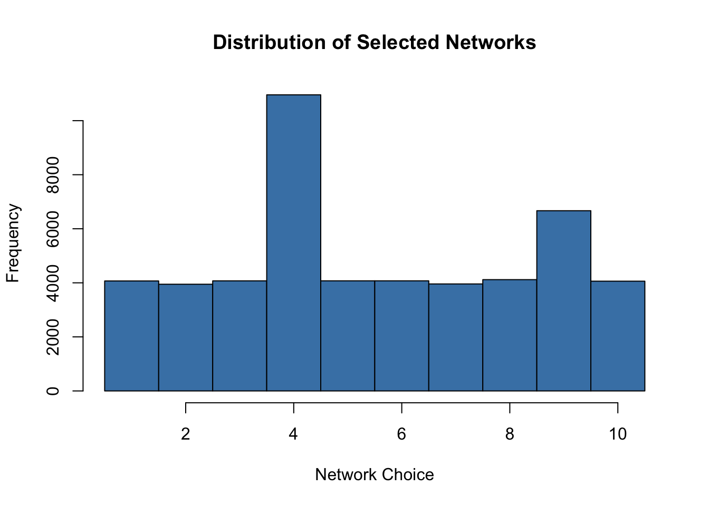
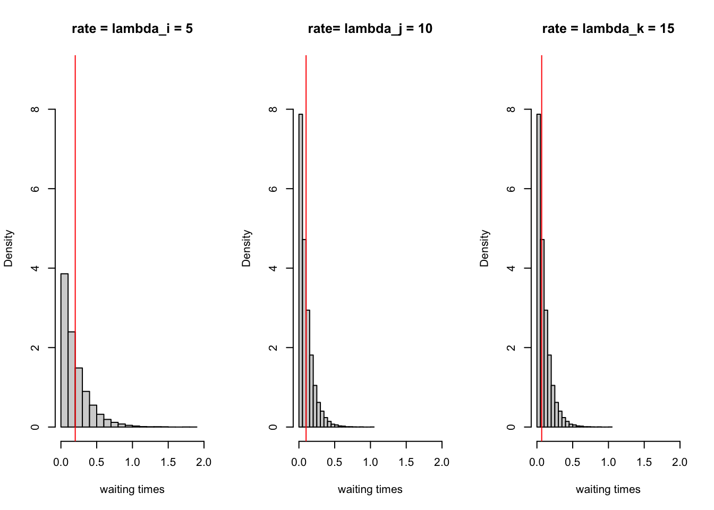

Start with clean workspace
rm(list = ls())fpackage.check <- function(packages) {
lapply(packages, FUN = function(x) {
if (!require(x, character.only = TRUE)) {
install.packages(x, dependencies = TRUE)
library(x, character.only = TRUE)
}
})
}
fsave <- function(x, file = NULL, location = "./data/processed/") {
ifelse(!dir.exists("data"), dir.create("data"), FALSE)
ifelse(!dir.exists("data/processed"), dir.create("data/processed"), FALSE)
if (is.null(file))
file = deparse(substitute(x))
datename <- substr(gsub("[:-]", "", Sys.time()), 1, 8)
totalname <- paste(location, datename, file, ".rda", sep = "")
save(x, file = totalname) #need to fix if file is reloaded as input name, not as x.
}
fload <- function(filename) {
load(filename)
get(ls()[ls() != "filename"])
}
fshowdf <- function(x, ...) {
knitr::kable(x, digits = 2, "html", ...) %>%
kableExtra::kable_styling(bootstrap_options = c("striped", "hover")) %>%
kableExtra::scroll_box(width = "100%", height = "300px")
}packages = c("RSiena", "devtools", "igraph")
fpackage.check(packages)#> [[1]]
#> NULL
#>
#> [[2]]
#> NULL
#>
#> [[3]]
#> NULL# devtools::install_github('JochemTolsma/RsienaTwoStep', build_vignettes=TRUE)
packages = c("RsienaTwoStep")
fpackage.check(packages)#> [[1]]
#> NULLts_net1#> [,1] [,2] [,3] [,4] [,5] [,6] [,7] [,8] [,9] [,10]
#> [1,] 0 0 0 0 0 0 0 0 0 0
#> [2,] 0 0 1 0 0 0 0 0 0 0
#> [3,] 1 0 0 0 0 1 0 0 0 0
#> [4,] 0 0 0 0 0 0 0 0 1 0
#> [5,] 0 0 0 0 0 0 0 0 0 0
#> [6,] 0 0 0 0 0 0 0 0 1 1
#> [7,] 1 0 0 0 0 0 0 0 0 0
#> [8,] 0 0 0 0 0 0 0 0 0 1
#> [9,] 0 0 0 1 0 0 0 1 0 0
#> [10,] 0 0 0 0 0 0 0 1 1 0net1g <- graph_from_adjacency_matrix(ts_net1, mode = "directed")
coords <- layout_(net1g, nicely()) #let us keep the layout
par(mar = c(0.1, 0.1, 0.1, 0.1))
{
plot.igraph(net1g, layout = coords)
graphics::box()
}
set.seed(24553253)
ego <- ts_select(net = ts_net1, steps = 1) #in rsienatwostep two actors may make a change together but here not
ego#> [1] 4options <- ts_alternatives_ministep(net = ts_net1, ego = ego)
# options
plots <- lapply(options, graph_from_adjacency_matrix, mode = "directed")
par(mar = c(0, 0, 0, 0) + 0.1)
par(mfrow = c(1, 2))
fplot <- function(x) {
plot.igraph(x, layout = coords, margin = 0)
graphics::box()
}
lapply(plots, fplot)
#> [[1]]
#> NULL
#>
#> [[2]]
#> NULL
#>
#> [[3]]
#> NULL
#>
#> [[4]]
#> NULL
#>
#> [[5]]
#> NULL
#>
#> [[6]]
#> NULL
#>
#> [[7]]
#> NULL
#>
#> [[8]]
#> NULL
#>
#> [[9]]
#> NULL
#>
#> [[10]]
#> NULLts_degree(net = options[[1]], ego = ego)#> [1] 2# or for all options
lapply(options, ts_degree, ego = ego)#> [[1]]
#> [1] 2
#>
#> [[2]]
#> [1] 2
#>
#> [[3]]
#> [1] 2
#>
#> [[4]]
#> [1] 1
#>
#> [[5]]
#> [1] 2
#>
#> [[6]]
#> [1] 2
#>
#> [[7]]
#> [1] 2
#>
#> [[8]]
#> [1] 2
#>
#> [[9]]
#> [1] 0
#>
#> [[10]]
#> [1] 2lapply(options, ts_recip, ego = ego)#> [[1]]
#> [1] 1
#>
#> [[2]]
#> [1] 1
#>
#> [[3]]
#> [1] 1
#>
#> [[4]]
#> [1] 1
#>
#> [[5]]
#> [1] 1
#>
#> [[6]]
#> [1] 1
#>
#> [[7]]
#> [1] 1
#>
#> [[8]]
#> [1] 1
#>
#> [[9]]
#> [1] 0
#>
#> [[10]]
#> [1] 1option <- 4
ts_degree(options[[option]], ego = ego) * -1 + ts_recip(options[[option]], ego = ego) * 1.5#> [1] 0.5eval <- ts_eval(net = options[[option]], ego = ego, statistics = list(ts_degree, ts_recip), parameters = c(-1,
1.5))
eval#> [1] 0.5eval <- sapply(options, FUN = ts_eval, ego = ego, statistics = list(ts_degree, ts_recip), parameters = c(-1,
1.5))
eval#> [1] -0.5 -0.5 -0.5 0.5 -0.5 -0.5 -0.5 -0.5 0.0 -0.5print("network with maximum evaluation score:")#> [1] "network with maximum evaluation score:"which.max(eval)#> [1] 4choice <- sample(1:length(eval), size = 1, prob = exp(eval)/sum(exp(eval)))
print("choice:")#> [1] "choice:"choice#> [1] 10# print('network:') options[[choice]]rate <- 2
degree <- -1
recip <- 1.5
ts_sims(nsims = 1, net = ts_net1, startvalues = c(rate, degree, recip), statistics = list(ts_degree,
ts_recip), p2step = c(1, 0, 0), chain = FALSE) #not that rate parameter is automatically included. #> [1] "nsim: 1"#> [[1]]
#> [,1] [,2] [,3] [,4] [,5] [,6] [,7] [,8] [,9] [,10]
#> [1,] 0 0 0 0 1 1 0 0 0 0
#> [2,] 0 0 1 0 0 1 0 0 0 0
#> [3,] 0 0 0 0 1 1 0 0 0 0
#> [4,] 0 0 0 0 0 1 0 0 1 1
#> [5,] 0 0 0 0 0 0 0 0 0 0
#> [6,] 0 0 0 0 0 0 0 0 1 1
#> [7,] 0 0 0 0 0 0 0 0 0 0
#> [8,] 0 0 0 0 0 0 0 0 0 0
#> [9,] 1 0 0 1 0 0 0 0 0 0
#> [10,] 0 0 0 0 0 0 0 1 0 0# Perform the random selection 1000 times
n_simulations <- 10000
choices <- numeric(n_simulations)
for (i in 1:n_simulations) {
eval <- sapply(options, FUN = ts_eval, ego = ego, statistics = list(ts_degree, ts_recip), parameters = c(-1,
1.5))
choice <- sample(1:length(eval), size = 1, prob = exp(eval)/sum(exp(eval)))
choices[i] <- choice
}
# Create a histogram of the selected networks
library(ggplot2)
choice_df <- data.frame(choice = factor(choices))
ggplot(choice_df, aes(x = choice)) + geom_bar(fill = "steelblue") + theme_minimal() + labs(title = "Distribution of Selected Networks",
x = "Network Choice", y = "Frequency")
n_simulations <- 50000
choices <- replicate(n_simulations, {
eval <- sapply(options, FUN = ts_eval, ego = ego, statistics = list(ts_degree, ts_recip), parameters = c(-1,
1.5))
sample(1:length(eval), size = 1, prob = exp(eval)/sum(exp(eval)))
})
hist(choices, breaks = seq(0.5, length(options) + 0.5, by = 1), col = "steelblue", main = "Distribution of Selected Networks",
xlab = "Network Choice")
par(mfrow = c(1, 3))
dist_5 <- rexp(10000, rate = 5)
hist(dist_5, main = "rate = lambda_i = 5", freq = FALSE, xlab = "waiting times", xlim = c(0, 2), ylim = c(0,
9))
abline(v = 1/5, col = "red")
dist_10 <- rexp(10000, rate = 10)
hist(dist_10, main = "rate= lambda_j = 10", freq = FALSE, xlab = "waiting times", xlim = c(0, 2), ylim = c(0,
9))
abline(v = 1/10, col = "red")
dist_15 <- rexp(10000, rate = 15)
hist(dist_10, main = "rate = lambda_k = 15", freq = FALSE, xlab = "waiting times", xlim = c(0, 2), ylim = c(0,
9))
abline(v = 1/15, col = "red")
set.seed(34641)
waitingtimes <- NA
waitingtimes[1] <- rexp(1, rate = 5)
waitingtimes[2] <- rexp(1, rate = 10)
waitingtimes[3] <- rexp(1, rate = 15)
print(paste("waitingtime_", c("i: ", "j: ", "k: "), round(waitingtimes, 3), sep = ""))#> [1] "waitingtime_i: 0.264" "waitingtime_j: 0.414" "waitingtime_k: 0.028"